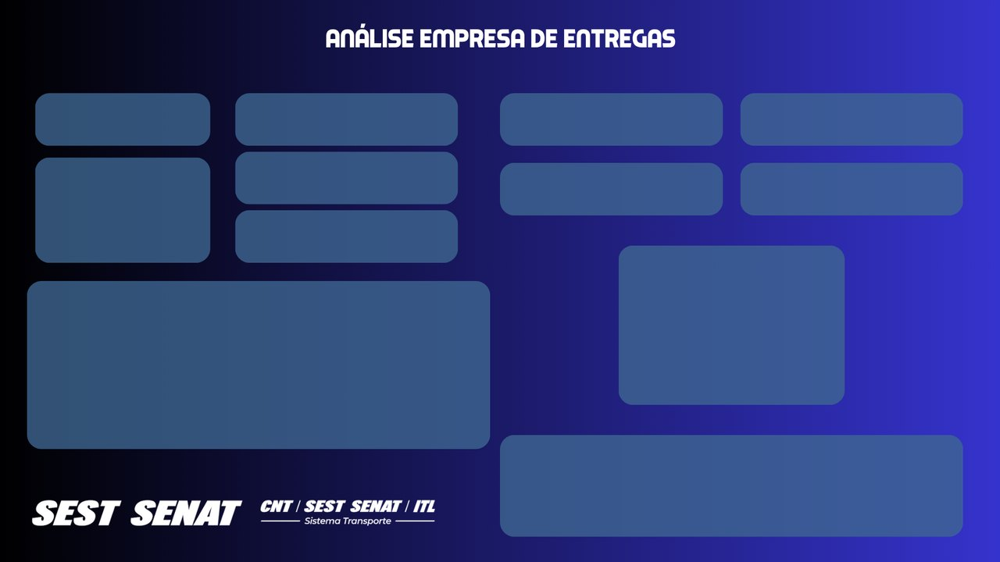

Informação, não planilha
O cliente já tem os dados. O que ele não tem são as respostas: quanto fatura, onde, com quem, o que está em risco.
Uma empresa de entregas manda a planilha. A turma devolve informação: do tratamento ao relatório compartilhado, em dois encontros
Tudo o que vimos no curso, agora num trabalho só, do começo ao fim. A planilha é de uma empresa de entregas; a análise é nossa. Algumas análises vêm sugeridas na página, as outras a turma decide junto.
Da planilha recebida a um modelo limpo, relacionado e com as regras da empresa.
Das perguntas da turma ao relatório pronto, às conclusões e à entrega.
A planilha que a empresa mandou. Baixe antes de começar: é ela que vamos abrir no Power BI.
Receber, conhecer, diagnosticar, tratar as quatro tabelas, relacionar e criar as colunas com as regras da empresa.
01 a 08 · cerca de 3 horas
Uma empresa de entregas locais nos mandou uma planilha com os seus entregadores, veículos, clientes e as entregas do último ano. O pedido: importar no Power BI, tratar o que for preciso e devolver informação, em análises, com todo o processo documentado.
a etapa no projeto
O cliente já tem os dados. O que ele não tem são as respostas: quanto fatura, onde, com quem, o que está em risco.
Cada tratamento, cada regra e cada análise vão para um documento. Outra pessoa precisa entender o que fizemos e por quê.
Abrir o Power BI e sair fazendo gráfico. Sem saber o que a empresa quer saber, o relatório vira uma coleção de números bonitos.
Quatro abas. Antes de tratar qualquer coisa: o que cada linha representa, qual coluna identifica cada linha e como uma aba se liga à outra. Depois, as perguntas que a empresa gostaria de ver respondidas.
o mapa da aba
O que a empresa de entregas gostaria de saber com estes dados? Uma pergunta por linha. No encontro 2, cada pergunta vira uma medida e um visual.
Quantas entregas a empresa fez? Quanto faturou, com entregas e com contratos? Quanto gasta com salários? Qual é o lucro?
Olhe as colunas: UF, porte, entregador, data e hora, conteúdo, tipo de veículo. Cada coluna é um jeito de dividir um número.
Pergunta que os dados não respondem, como "qual entregador é mais simpático?". Confira se existe coluna para isso.
Antes de abrir o Power Query, a caça aos problemas. Cada cartão mostra um pedaço real da planilha: o que está errado ali? Discuta com a turma e clique para conferir.
linhas 4.599 a 4.997: todas as células vaziaso que fazer? clique para conferirSão 399 linhas em branco no fim, que o Excel guardou por causa da formatação. O Power Query traz todas.
Tratamento: Remover Linhas › Remover Linhas em Branco (seção 04).
Nome: Vinícius · Sobrenome: Nuneso que fazer? clique para conferirPara mostrar no gráfico, o nome inteiro numa coluna só é melhor. E nomes repetem: há 101 nomes diferentes para 124 pessoas.
Tratamento: Mesclar Colunas com espaço → Nome Completo (seção 05).
+55 (35) 67205-9812o que fazer? clique para conferirOs 235 telefones (entregadores e empresas) começam com +55: a informação não diferencia ninguém.
Tratamento: Substituir Valores "+55 " por nada (seções 05 e 06).
Conjunto Pinto, 54, Pindorama, 93208550 Brito / RRo que fazer? clique para conferirCidade e UF estão grudadas no fim do texto: não dá para fazer "faturamento por UF". E o CEP vem de dois jeitos: 93208550 e 95666-610.
Tratamento: Dividir Coluna por Delimitador, três vezes (seções 05 e 06).
Data e Hora da Entrega: 2024-10-02 18:15:20o que fazer? clique para conferirData e hora juntas. Para analisar por mês e por horário do dia, cada uma precisa da sua coluna.
Tratamento: Adicionar Coluna › Data › Somente Data e Hora › Somente Hora (seção 04).
Valor Final da Entrega (R$) · Porcentagem de Taxa (%)o que fazer? clique para conferirO "(R$)" e o "(%)" vão aparecer em todo título de gráfico e atrapalham nas fórmulas DAX.
Tratamento: renomear as colunas (seção 04). O formato de moeda fica para o Power BI.
Porcentagem de Taxa: 11,83 · 12,12 · 5,62 · 12,07 …o que fazer? clique para conferirA taxa varia de 5% a quase 15%, sem regra. A empresa cobra por porte do cliente: Pequeno 5%, Médio 8%, Grande 9,5%.
Tratamento: uma coluna calculada com a regra (seção 08). É decisão de negócio, não clique.
entrega em 2025, entregador demitido em 2024o que fazer? clique para conferir966 entregas têm data depois da demissão do entregador, e 418 são de antes da assinatura do contrato do cliente. Isso não se conserta com clique.
Tratamento: registrar no documento e perguntar à empresa. Não se apaga dado sem saber o motivo.
primeira entrega: 30/07/2024 · última: 30/07/2025o que fazer? clique para conferirJulho de 2024 tem só 24 entregas: o período começa no dia 30. Num gráfico por mês, ele parece um mês ruim, mas está incompleto.
Tratamento: avisar no relatório ou filtrar os meses completos. A turma decide.
Linha em branco se remove. Entrega depois da demissão se investiga. Saber a diferença é o que separa limpeza de dado de apagar informação.
A planilha é fictícia: nomes, CNPJs e valores foram gerados. Por isso aparecem coisas como uma Yamaha Factor cadastrada como caminhonete.
Corrigir na planilha original, no Excel. O tratamento fica no Power Query, em etapas que se repetem quando chegar a planilha do mês que vem.
Obter dados › Excel, marque as quatro abas no Navegador e clique em Transformar Dados. A primeira consulta é Entregas: tirar as linhas em branco, separar data e hora e limpar os nomes das colunas.
Data e Hora da Entrega já chega como Data/Hora: o ícone tem calendário e relógioPágina Inicial › Remover Linhas › Remover Linhas em Branco selecione Data e Hora da Entrega Adicionar Coluna › Data › Somente Data Adicionar Coluna › Hora › Somente Hora clique duplo no título: renomear Data → Data da Entrega Hora → Hora da Entrega remova Data e Hora da Entrega
= Table.AddColumn(#"Linhas em Branco Removidas",
"Data", each DateTime.Date([Data e Hora da Entrega]),
type date)
= Table.AddColumn(#"Data Inserida",
"Hora", each DateTime.Time([Data e Hora da Entrega]),
type time)
// e renomear Valor do Conteúdo (R$),
// Valor Final da Entrega (R$) e Porcentagem de Taxa (%)
Adicionar Coluna cria uma coluna nova e mantém a original até você decidir apagá-la. Transformar troca a própria coluna: sem volta, a não ser pelas Etapas Aplicadas.
Com a hora separada, dá para perguntar em que horário do dia a empresa mais entrega. Com as duas juntas, cada valor é único e não agrupa.
Se a coluna ficar como texto, o menu Data fica cinza. Aí o caminho é Dividir Coluna pelo espaço e acertar o tipo de cada parte.
Três comandos para três problemas: Mesclar Colunas junta o nome, Substituir Valores tira o +55 e Dividir Coluna por Delimitador separa o endereço em pedaços, do fim para o começo.
Dividir Coluna fica em Página Inicial e em Transformar; o delimitador personalizado aceita espaçosConjunto Pinto, 54, Pindorama, 93208550 Brito / RR 1. Endereço, delimitador " / ", mais à direita Endereço.1 Conjunto Pinto, 54, Pindorama, 93208550 Brito Endereço.2 RR → renomear UF 2. Endereço.1, delimitador ", ", mais à direita Endereço.1.1 Conjunto Pinto, 54, Pindorama Endereço.1.2 93208550 Brito 3. Endereço.1.2, delimitador " ", mais à esquerda Endereço.1.2.1 93208550 → renomear CEP Endereço.1.2.2 Brito → renomear Cidade
= Table.SplitColumn(#"Valor Substituído", "Endereço",
Splitter.SplitTextByEachDelimiter({" / "},
QuoteStyle.Csv, true),
{"Endereço.1", "Endereço.2"})
// true = delimitador mais à direita
// depois de cada divisão, o Power Query
// acrescenta sozinho uma etapa Tipo Alterado
= Table.ReplaceValue(#"Colunas Mescladas",
"+55 ", "", Replacer.ReplaceText, {"Telefone"})
O começo do endereço muda (às vezes tem bairro, às vezes não), mas o fim é sempre "CEP Cidade / UF". Cortar pelo delimitador mais à direita é seguro.
"Castro das Flores" tem espaços. Por isso o último corte é no espaço mais à esquerda: separa o CEP e deixa a cidade inteira.
Substituir "+55" sem o espaço: o telefone fica " (35) 67205-9812", com um espaço na frente que ninguém vê e que atrapalha a comparação.
Os mesmos problemas da tabela anterior: telefone com +55 e endereço com cidade e UF grudadas. Sem passo a passo desta vez: a turma diz o comando, o delimitador e o lado.
a coluna de telefone aqui se chama Telefone de ContatoCNPJ 26.503.971/0001-48
Razão Social Pacheco Pacheco Ltda. S/A
Endereço Jardim de Mendonça, 19, Juliana,
25564729 Sales de Barros / RN
Telefone de Contato +55 (99) 85307-2483
Porte Médio
qual comando tira o +55? qual delimitador separa a UF? de que lado? e a cidade, que vem depois do CEP? o que sobra na coluna Endereço? os nomes novos: UF, Cidade, CEP
Dados parecidos pedem o mesmo tratamento. Num projeto real, o mesmo jeito de tratar endereço em todas as tabelas facilita juntar tudo depois.
A quarta aba já chega limpa: nenhuma coluna para dividir ou substituir. Confira a qualidade das colunas e feche.
Esquecer de renomear: "Endereço.2" no gráfico não diz nada para a empresa. O nome da coluna é o rótulo que o cliente vai ler.
Entregas é a tabela de fatos: cada linha aponta para um entregador, uma empresa e um veículo. Três relações 1 para muitos, e nenhuma com o mesmo nome dos dois lados.
arraste a coluna de Entregas até a chave da outra tabela; o terceiro ícone à esquerda é a Exibição de modeloEntregas[CPF do Entregador] * → 1 Entregadores[CPF] Entregas[CNPJ do Solicitante] * → 1 Empresas Clientes[CNPJ] Entregas[Placa do Veículo] * → 1 Veículos[Placa]
Detecção automática: nenhuma relação procura colunas com o mesmo nome e valores em comum. CPF × CPF do Entregador: nomes diferentes. Endereço × Endereço: mesmo nome, mas nenhum valor igual.
Uma tabela de fatos no meio e os cadastros em volta. É o desenho mais comum de um modelo no Power BI.
Do cadastro (1) para Entregas (*). Escolher uma UF filtra as entregas; escolher um mês não filtra os salários dos entregadores.
Ligar Entregadores a Empresas pela coluna UF: as duas repetem a UF, e a relação seria muitos para muitos, sem sentido para o negócio.
A empresa explicou duas regras. A manutenção do veículo deve ser feita em breve quando faltam 10.000 km ou menos para a revisão. A taxa da entrega depende do porte do cliente: Pequeno 5%, Médio 8%, Grande 9,5%. A primeira é conta; a segunda tem uma dúvida.
clique na tabela no painel Dados antes de Nova coluna: a coluna nasce nela// Veículos
Manutenção em Breve =
IF(
Veículos[Quilometragem da Próxima Revisão]
- Veículos[Quilometragem rodada] <= 10000,
"Sim", "Não"
)
// Entregas: o porte está em Empresas Clientes
Taxa por Porte =
SWITCH(
RELATED('Empresas Clientes'[Porte]),
"Pequeno", 0.05,
"Médio", 0.08,
"Grande", 0.095
)
// SWITCH compara o valor com cada opção, em ordem
"Aplica-se taxa de 5% em cada entrega realizada." Sobre o preço da entrega? Sobre o valor da mercadoria? Ou a taxa é tudo o que a empresa fica? Cada leitura dá um faturamento diferente. A turma escolhe e registra a decisão.
a coluna Faturamento da Entrega
Toda escolha que muda um número entra aqui: a leitura da taxa, o que fazer com as entregas depois da demissão, os meses incompletos.
Os laboratórios seguintes usam a primeira leitura (taxa sobre o valor da entrega). Se a turma escolher outra, os valores no Power BI de vocês serão outros, e está tudo bem: o que importa é estar registrado.
Num projeto real, a dúvida vai por escrito para o cliente. A análise não inventa regra de negócio.
Taxa em número inteiro: "Pequeno", 5 multiplica o valor por 6. Em DAX, 5% se escreve 0.05.
As perguntas da turma viram medidas e visuais; o relatório ganha fundo, conclusões, documento e um jeito de chegar ao cliente.
09 a 15 · cerca de 3 horas
As perguntas do encontro 1 estão de volta. Cada uma vira três coisas: uma medida (o número), um eixo (como dividir o número) e um visual. O gerador abaixo mostra como uma medida e uma coluna formam uma pergunta, e quando o modelo não consegue respondê-la.
pergunta, medida, eixo e visual
Marque ✓ as perguntas que já têm medida e visual no relatório. As que ficarem sem ✓ vão para o documento como próximos passos.
Se um gráfico tenta responder duas perguntas, não responde nenhuma. Divida.
O fundo tem espaço para uns doze visuais. Entre as perguntas da turma, quais ajudam a empresa a decidir alguma coisa?
Salários por porte do cliente: o filtro de Empresas Clientes não chega a Entregadores. O cartão mostra o mesmo total em todas as barras.
Seis medidas respondem às perguntas sugeridas: quantas entregas, quanto faturaram as entregas e os contratos, quanto se gasta com salários e o lucro. Cada uma na tabela de onde vem o número, formatada em Moeda e com o valor inteiro no cartão.
Nova medida, escreva e tecle Enter; depois selecione o cartão e marque a medidaTotal de Entregas = COUNTROWS(Entregas)
Faturamento Entregas =
SUM(Entregas[Faturamento da Entrega])
Faturamento com Contratos =
SUM('Empresas Clientes'[Valor mensal do contrato])
Faturamento Total =
[Faturamento Entregas] + [Faturamento com Contratos]
Despesa com Salários =
SUM(Entregadores[Salário Mensal])
Lucro = [Faturamento Total] - [Despesa com Salários]
// cartão: Formatar visual › Valor do balão
// › Unidades de exibição: Nenhum
// R$ 651.204,58 em vez de R$ 651,20 Mil
As entregas cobrem um ano inteiro. "Valor mensal do contrato" e "Salário Mensal" são de um mês. Somar tudo junto mistura um ano de entregas com um mês de contratos e salários. Como a turma resolve?
34 dos 124 entregadores têm data de demissão. A soma dos salários com eles é R$ 317.315,90; só com os 90 ativos, R$ 231.068,30. Qual entra na despesa?
Escolher um mês na segmentação e achar que o lucro do mês apareceu: o filtro de data chega às entregas, mas não aos contratos nem aos salários.
O fundo dá a cara do relatório e reserva o lugar de cada visual. A turma desenha o próprio no Canva, juntos. O da turma anterior está aqui como referência: título, caixas para os cartões, espaços grandes para os gráficos e os logotipos.

Canva
Criar design › Tamanho personalizado
1920 × 1080 px (ou 1280 × 720: a mesma proporção 16:9)
fundo, título e caixas com cantos arredondados
deixe espaço entre as caixas: o visual tem margem
Compartilhar › Baixar › PNG
Power BI
Formatar página › Tela de fundo
Imagem: o PNG do Canva
Ajuste da imagem: Ajustar
Transparência: 0%
em cada visual: Tela de fundo › Desativado
Conte os visuais antes de desenhar: quantos cartões, quantos gráficos grandes. A caixa nasce do tamanho da resposta.
Texto branco pede fundo escuro; cores fortes nas caixas brigam com as cores dos gráficos. Caixas discretas deixam os números aparecerem.
Exportar em 1080 × 1080 ou em outra proporção: a imagem estica na página 16:9 do Power BI e as caixas saem do lugar.
Os cartões das medidas sugeridas já estão no lugar. Os espaços vazios esperam as análises da turma: escolha o espaço, o tipo de visual e os campos. As medidas e as colunas estão todas no painel Dados.
clique num espaço vazio, escolha o visual em Visualizações e marque os campos em Dadosem cima, à esquerda: segmentação de dados Entregas[Data da Entrega] › Ano e Mês espaço grande de baixo: um gráfico de colunas ou de barras com uma coluna de cadastro no eixo espaço do meio, à direita: um ranking barras + Filtros neste visual › N superior faixa de baixo, à direita: um gráfico por porte
gráfico sem título no fundo escuro: Formatar visual › Título remover o eixo e mostrar o valor: Eixo X: Desativado · Rótulos de dados: Ativado N superior: Filtros neste visual › Tipo de filtro: N superior › Mostrar itens: Em cima 3 › Por valor: a medida
Antes de clicar num visual, diga em voz alta a pergunta que ele responde. Se não der, o espaço fica para outra análise.
Escolha um mês na segmentação e veja o que muda. Os cartões que não mudam contam uma história sobre o modelo.
Um gráfico de barras com os 124 entregadores: ninguém lê. Ranking pede N superior; o resto vai numa tabela.
O relatório mostra; a conclusão explica. Uma boa conclusão tem três partes: o que vimos, o que significa para a empresa e o que recomendamos. Um exemplo com a coluna de manutenção, e o resto é da turma.
o que vimos 111 dos 223 veículos (quase metade) estão a 10.000 km ou menos da próxima revisão o que significa se todos pararem para revisão ao mesmo tempo, falta veículo para as entregas o que recomendamos agendar as revisões em lotes, começando pelos que estão mais perto do limite
Uma conclusão por linha: o que vimos, o que significa e o que recomendamos.
"R$ 186 mil" sozinho não diz nada. Comparado com quê? Com o mês anterior, com outra UF, com o salário?
Entregas depois da demissão, meses incompletos, contratos mensais: uma conclusão honesta cita os limites.
Concluir causa a partir de coincidência: "a UF X fatura mais porque tem melhores entregadores". Os dados mostram onde, não por quê.
O cliente pediu o processo documentado. O documento junta o que a turma fez nas quatro partes abaixo e o que está nos quadros (perguntas, decisões e conclusões). No fim, baixe em .txt.
prévia do documento
Para o cliente e para quem pegar o projeto depois. Escreva como se a pessoa não tivesse visto a aula.
Os campos e os quadros ficam salvos neste navegador, neste computador, até alguém apagar. Baixe o .txt no fim para não depender disso.
Documentar só o "como" e esquecer o "por quê": "taxa sobre o valor da entrega" sem dizer que foi uma decisão da turma vira regra inventada.
O relatório pronto precisa chegar a quem decide. O jeito certo depende de quem recebe, do que a pessoa vai fazer com ele e de que dados ele mostra.
o caminho
Relatório e documento andam juntos. O cliente precisa dos números e das decisões que estão por trás deles.
CPF, telefone e salário são dados pessoais. Antes de compartilhar, pergunte: quem recebe precisa ver isso?
Publicar na Web para "mandar o link ao chefe": o link fica aberto para qualquer pessoa na internet, com todos os dados.
Uma pergunta por etapa. Responda em voz alta; um clique mostra a resposta certa e o porquê.
A planilha chegou. Qual é o primeiro passo?
Sem saber o que a empresa quer e como os dados se organizam, o resto é tentativa.
"Conjunto Pinto, 54, Pindorama, 93208550 Brito / RR". Como tirar a UF?
O fim do endereço é sempre "/ UF". Dividir pela direita separa a UF numa coluna própria.
966 entregas têm data depois da demissão do entregador. O que fazer?
Não se apaga nem se corrige dado sem saber o motivo. Pode ser erro de cadastro, pode ser outra coisa.
Por que a Detecção automática não ligou Entregas a Entregadores?
Ela procura o mesmo nome com valores em comum. Os valores batem; os nomes, não. Essa se faz à mão.
Na coluna Taxa por Porte, por que RELATED?
RELATED busca, pela relação, o valor do lado 1 para a linha de Entregas que está sendo calculada.
Ao escolher um mês na segmentação, a Despesa com Salários não muda. Por quê?
O filtro anda do lado 1 para o lado *. Entregadores é o lado 1: o filtro de Entregas não volta para lá.
Qual é a melhor conclusão?
Conclusão tem o que vimos, o que significa e o que fazer. Número solto é só o começo.
O gestor quer acompanhar o relatório no celular, sempre atualizado. Como compartilhar?
O serviço mantém o relatório interativo e com acesso controlado. Publicar na Web deixa tudo aberto para qualquer pessoa.
Não há atividade para enviar. A avaliação acontece durante os dois encontros, em cada etapa do estudo de caso.
Trazer perguntas para a empresa, apontar problemas no diagnóstico e dizer o comando antes de ele ser feito.
Defender uma leitura da regra da taxa, escolher as análises do relatório e os visuais de cada espaço.
Escrever conclusões com o que vimos, o que significa e o que recomendamos, e ajudar a fechar o documento.